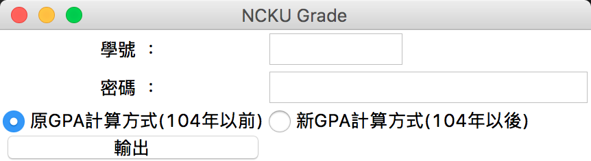

Feature
- 產生歷年成績報表(xlsx)
- 計算GPA
- 統計各類別通識修課數量
USAGE
選擇要採用的GPA計算方式
輸入成大的帳號密碼後，按輸出會詢問儲存位置
選好後，等到「輸出成功」出現就完成了
GPA Rule
Before 104
- 80~100分: 4.0
- 70~79分: 3.0
- 60~69分: 2.0
- 50~59分: 1.0
After 104
- 90~100分: 4.3
- 85~89分: 4.0
- 80~84分: 3.7
- 77~79分: 3.3
- 73~76分: 3.0
- 70~72分: 2.7
- 67~69分: 2.3
- 63~66分: 3.0
- 60~62分: 1.7
Todo
Parse Course Name in English from other site
AUTHORS
LICENSE
MIT